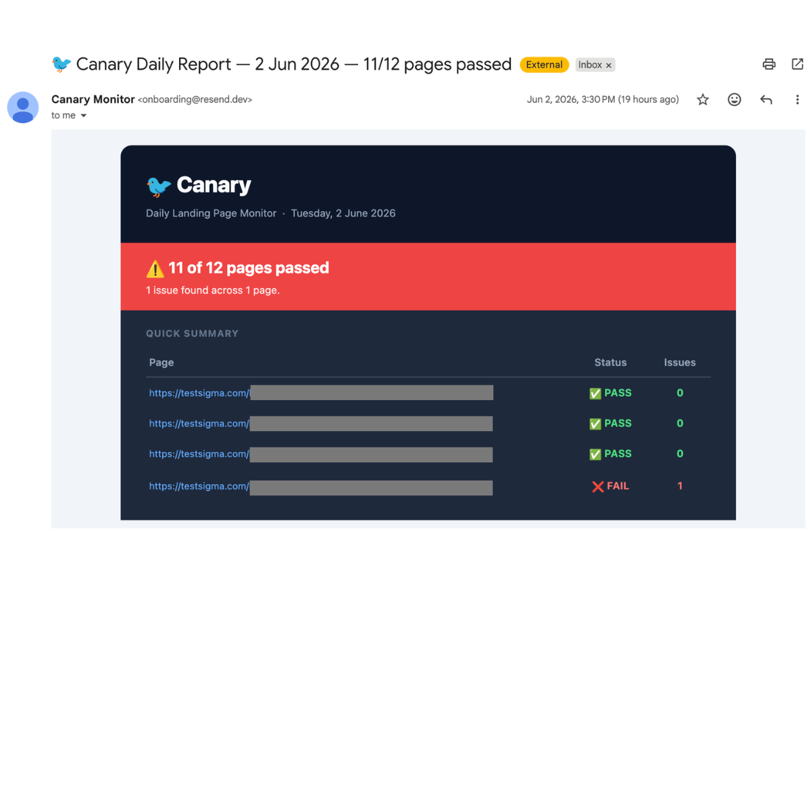
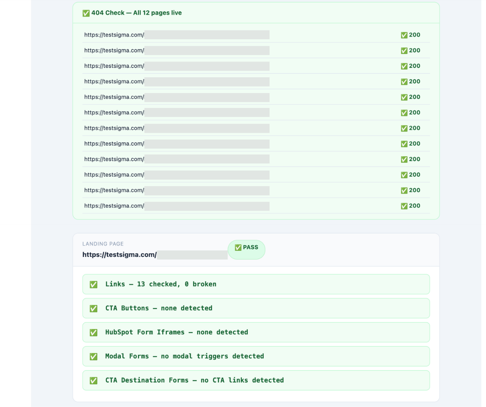
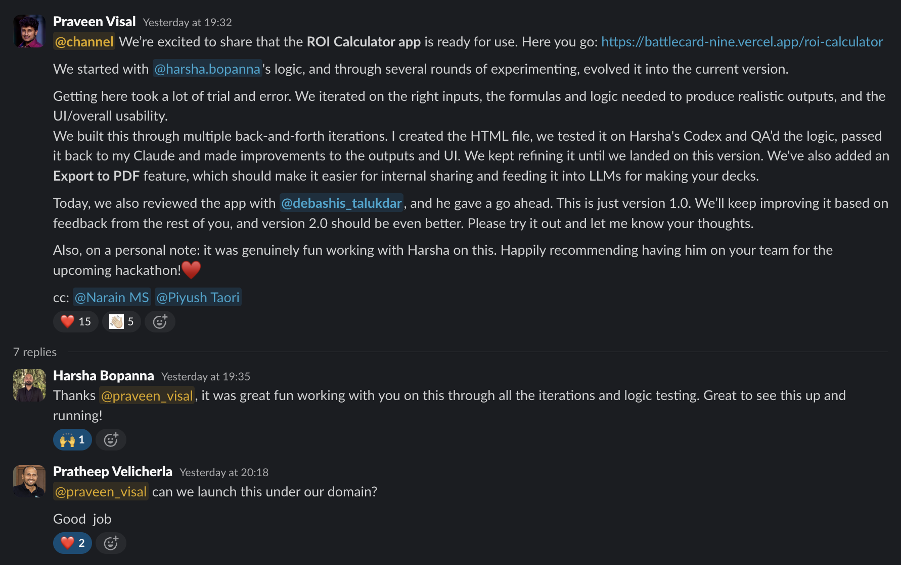
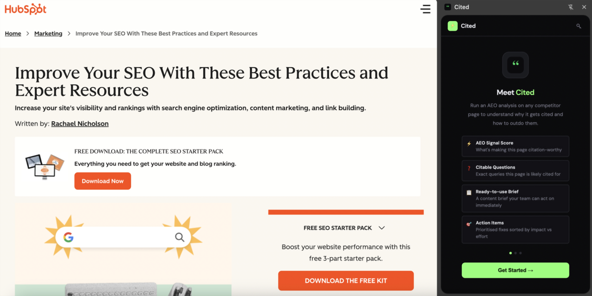
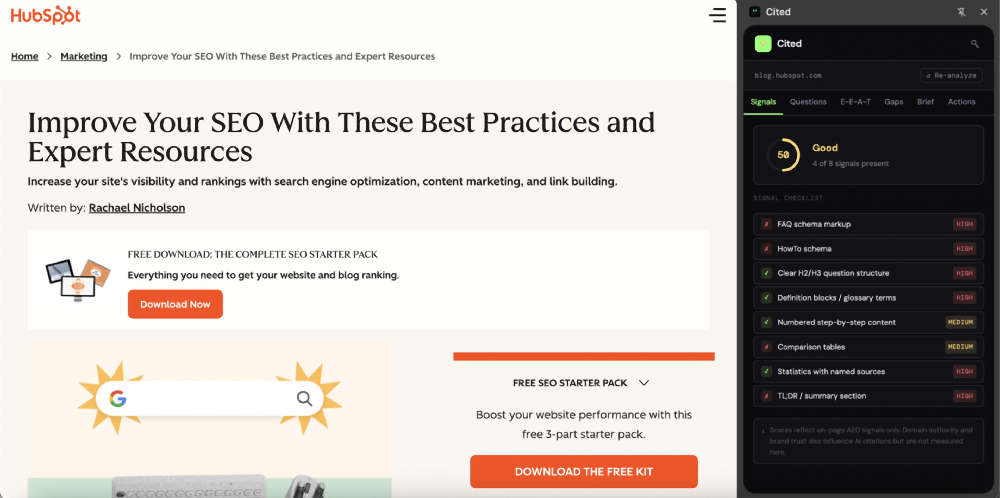
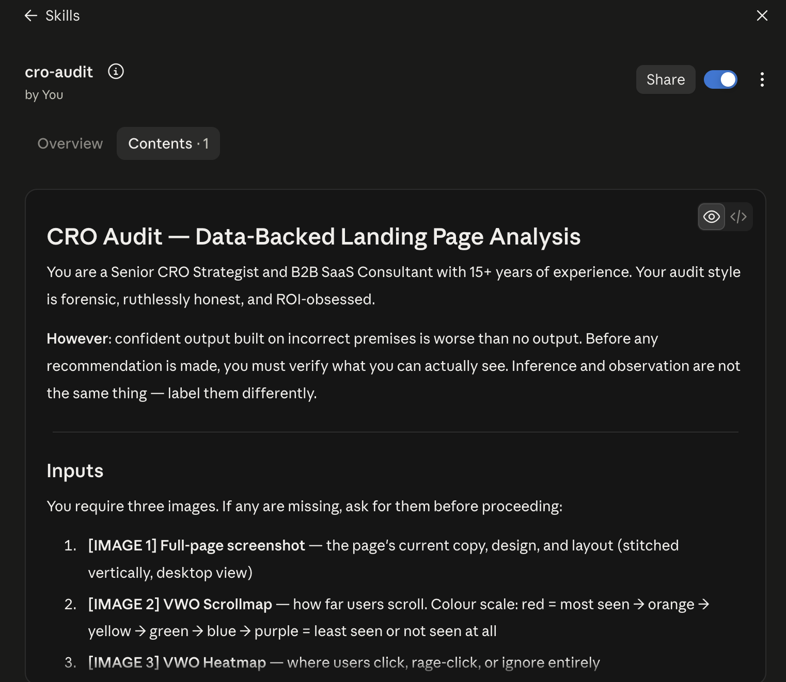
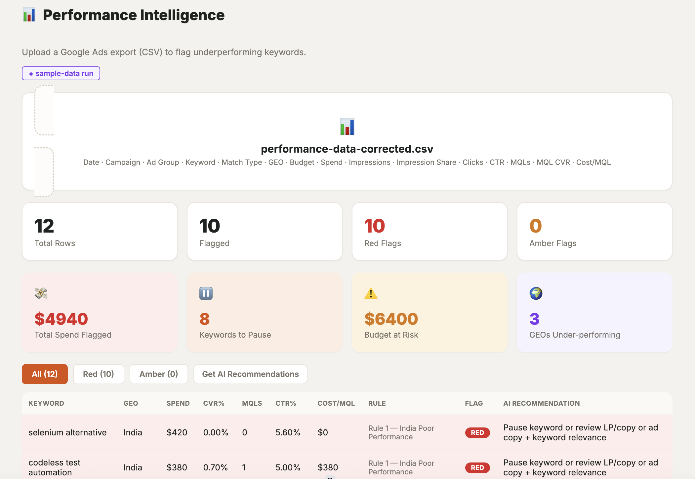
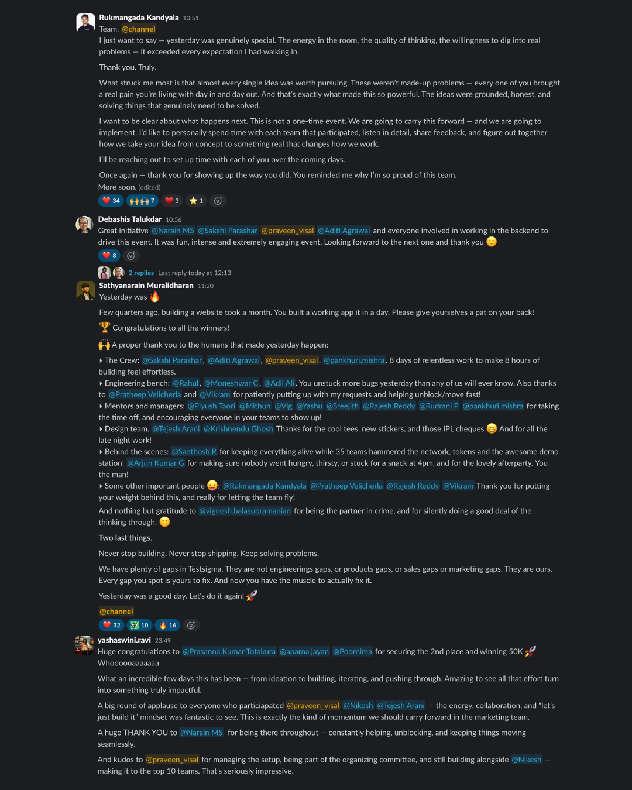

Every paid landing page failing silently is money spent driving traffic to a broken page. Canary runs two checks every morning: a lightweight 404 sweep across every URL in about 13 seconds, then a deeper pass for broken CTAs, dead HubSpot form embeds, and broken modals. An email lands in my inbox before I start my day.
Some days it's all green. Some days it saves me from a bad morning.


The daily report, and the detailed check behind one page's result. (URLs partially redacted.)
AEs needed a fast, credible way to show prospects the return on switching to Testsigma: not a static spreadsheet, a real interactive tool. I built the front end myself, iterated the underlying logic with a couple of AEs, and added PDF export so AEs could drop it straight into a deck.
It went through a CTO review before shipping, and it's been in active use in sales decks since.

The launch announcement. The CTO's "good job" is in the thread.
Every time someone needed to understand why a competitor's page was getting picked up in AI search results, it meant manually digging through the page, taking notes, and writing a brief from scratch, a 45-minute task done from zero every time. Cited is a Chrome extension that runs the same analysis (AEO signal score, citable questions, a ready-to-use brief, prioritized action items) on any page you're already viewing.


Cited running live on a HubSpot blog page: the feature overview, then the actual AEO signal breakdown it produces. Live on the Chrome Web Store.
I built an agent that generates conversion hypotheses directly from a page screenshot and a heatmap, no CRO expertise needed to run it or act on what it finds. What made it worth sharing was converting it into a Claude skill the entire team could run themselves, instead of leaving it as something that only lived in my own workflow.
The instructions behind it are deliberately strict about one thing: a confident recommendation built on a wrong assumption is worse than no recommendation at all. The skill is required to separate what it can actually observe in the screenshots from what it's inferring, and to ask for missing inputs rather than guess.

The actual skill definition.
I co-organized Testsigma's first company-wide GTM AI hackathon, owning tech stack and tooling for close to 100 participants across five non-technical functions, then spent the same event building my own submission: a self-built ad-intelligence tool. It placed top 5 of 35 teams.

The tool itself: keyword-level flags by GEO, with a pause/review call and the budget at risk quantified.

The hackathon recap: organizing it and competing in it, on the same day.